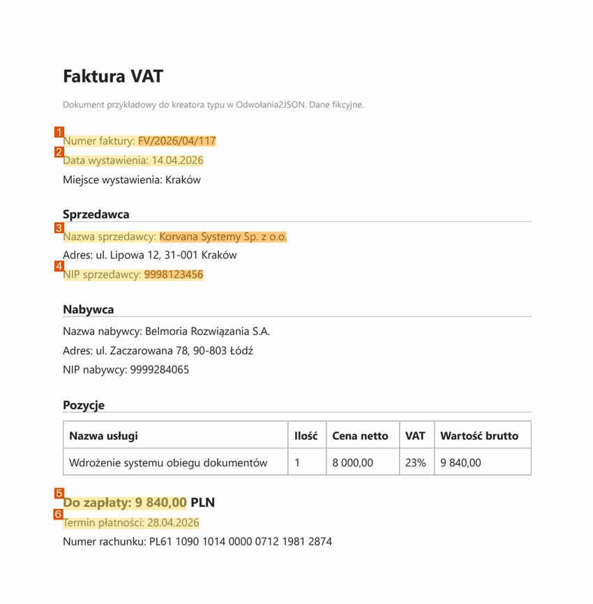
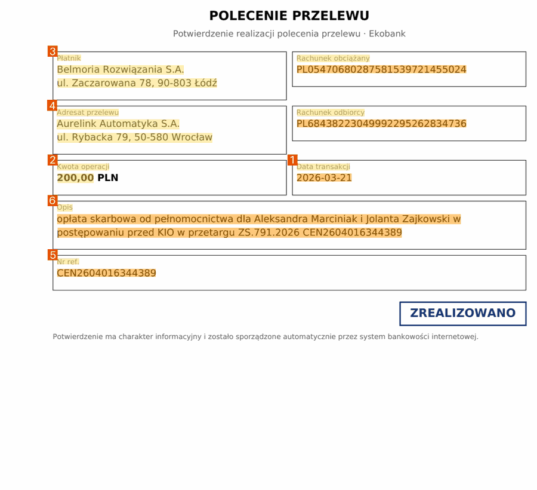

Sprawa odwoławcza KIO w PDF → JSON dla każdego dokumentu
{})null. Niczego nie zgadujemy.typ: przelew
znaczniki:
- przelew
- [rachunek obciążany, zleceniodawca, …]
pola:
przelew_bankowy.data_operacji:
etykiety: [data operacji, data księgowania, …]
wzorce: ['({DATA})']
przelew_bankowy.z_rachunku:
etykiety: [rachunek obciążany, …]
wzorce: ['({RACHUNEK})']
format: bez_spacji
config/ustawienia.yaml.
--wyjasnij.
| Biblioteka | Licencja | Do czego |
|---|---|---|
| pypdf | BSD-3-Clause | tekst z cyfrowego PDF |
| pypdfium2 (PDFium) | Apache 2.0 / BSD-3-Clause | obraz strony do OCR i podglądu |
| RapidOCR, onnxruntime | Apache 2.0, MIT | OCR skanów na CPU |
| Morfeusz2 (SGJP) | BSD-2-Clause | imiona i nazwiska w mianowniku |
| PyYAML | MIT | pliki konfiguracji |
| Streamlit, Pillow | Apache 2.0, MIT-CMU | GUI, podświetlenia |
| uv | Apache 2.0 / MIT | instalacja Pythona 3.13 |
Maszyna UZP (RUN.md)cd /opt/solution && sudo sh uruchom.sh
GUIhttp://20.215.209.150:8080
Windowsstart.bat · GUI: gui.bat
Kod, dokumentacja, decyzje (ADR), testygithub.com/Andrii2203/odwolania2json